送配電会社は、発電所で発電された電気を、送電線を通じて消費地近くの変電所に送り、さらに変電所から配電線を通じて工場やご家庭へと届けています。電力流通部門は、電力系統を構成する送電線、変電所、通信線などの「電力設備の整備・保守業務」と「電力系統の運用業務」を担当しています。電力設備の整備・保守業務は、将来の需要動向を想定して、需要に応じた電力設備の建設・更新工事を行う業務です。さらに安定して電気を届けるためには、電力設備の保守メンテナンス業務も重要です。現在、業務の効率化と高度化を目指して、ドローンの活用や最新の劣化診断技術、情報通信技術（ICT）の導入に取り組んでいます。
電力系統の運用業務は、刻々と変化する電力需要と需給のバランスを調整し、突然の自然災害などでも停電が起きないよう24時間365日常に電力系統全体を監視、制御する重要な業務です。また、電力系統には発電会社や電気を使用する工場など様々な事業者が接続しているため、効率的な運用には複数の関係者と調整する能力が求められます。
このように、電力流通部門は、電気・電子、機械、通信に留まらない様々な知識と能力で電気が届いて当たり前と感じる現在の社会を支えています。
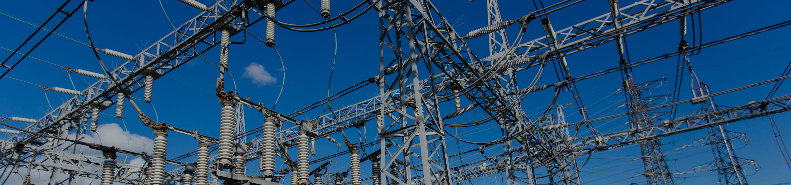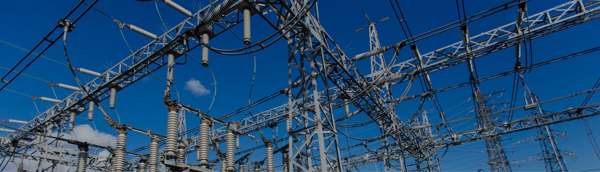
電力流通部 系統計画チーム橋本 由里子
入社 / 1997年
電気工学科修了
2015年7月 中央給電指令所 副所長
2016年7月 富山支社 技術部 流通技術担当 副課長
2019年7月 電力流通部 系統計画チーム 課長代理
経歴は取材時点のものです
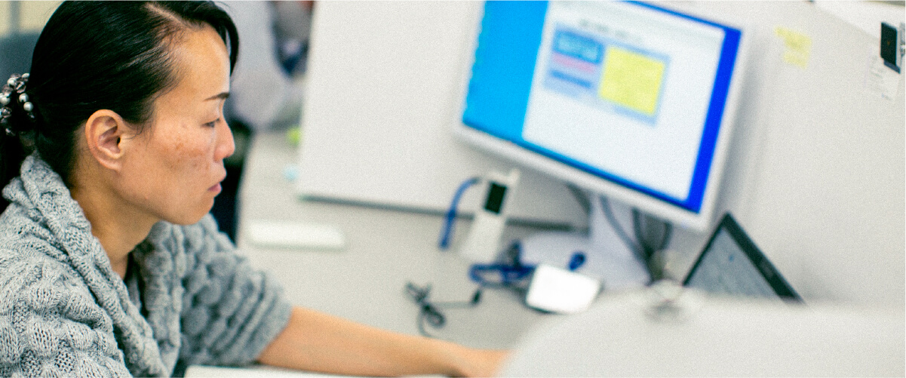
 歩んできたキャリアは？
歩んできたキャリアは？
地元、北陸に根ざした企業でライフイベントに関わらず長く働き続けたいと考え入社。その後、変電保守業務、電力系統保守・運用、出向、給電設備保守・運用、装置・システム更新を経験してきました。当時女性の技術者は多くありませんでしたが、環境にとらわれずに力を発揮したいと考え、なにがあっても電気を送り届けていく、その一心で働き続けてきました。近年では、電力設備計画や電力系統計画、これからの電源構成で重要性の増している再生可能エネルギー導入拡大検討を担い、北陸電力のさらなる発展を主導できるよう取り組んでいます。
 現在の仕事、
現在の仕事、
プロとして意識していることは？
私が計画を担う電力系統は、多種類の電気設備をつなげ、発電所から変電所を経て、各企業や家庭へ電気を安定的に供給するシステムです。まさに電気を送り届ける営みの根幹。北陸地域を俯瞰し、電気を確かに送り届ける存在としてこれからも公平・中立的にシステム全体を構想するため日々邁進しています。ここで欠かせないのは未来の視点。電力需要の見通しや政府方針、再生可能エネルギー等の電源動向、新技術導入などさまざまな観点を組み合わせ、電力系統強化や拡大を判断し、計画を立案していきます。信頼性と経済性を両立させ、各方面での調整を重ねながら進行していく。非常に難易度が高い仕事ですが、入社前に抱いていた、北陸で長く働き、地域に貢献していきたいとの思い、人々の暮らしを支えていく誇りを胸に、なにがあっても諦めずに進んでいきたいと思います。
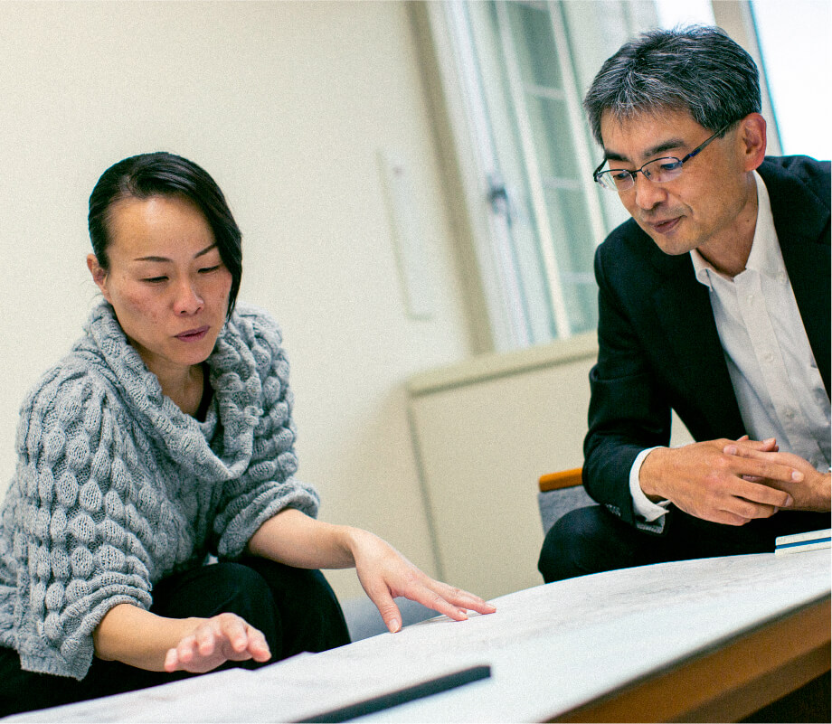
 これから挑みたいことは？
これから挑みたいことは？
誰もが活躍できる環境づくりへ、女性技術者として私がその前例となれるよう日々懸命に取り組んでいきたいと思っています。私の歩みを振り返ると、まだまだ女性技術者の数が少なかった当時においても、ともに働くメンバーがとても協力的で、仕事との両立を図っていたときの配慮やアドバイスには、いくら感謝してもしきれないほど。また、経営陣も男女関係なくフランクに接してくれる親しみやすい社内の雰囲気は今も昔も変わっていません。北陸電力、ここには女性が活躍できる環境がある。だからこそ、活躍している女性を一人でも多く増やしていきたいと思います。
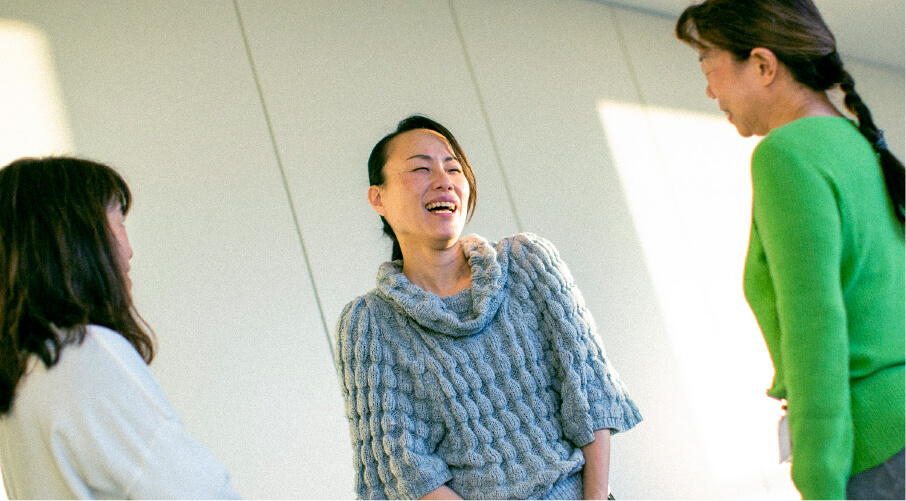
 学生へメッセージを
学生へメッセージを
自らが地域の未来を考え、事業の構想を描いていく、当社にはそんな充実感を持って向き合える仕事があります。人々の暮らしのために、北陸の産業のために、そのような高い志を持って臨む仕事に性別や役職は関係ありません。誰でも挑戦できるのが北陸電力の良さです。ともに挑んでいける人をお待ちしています。

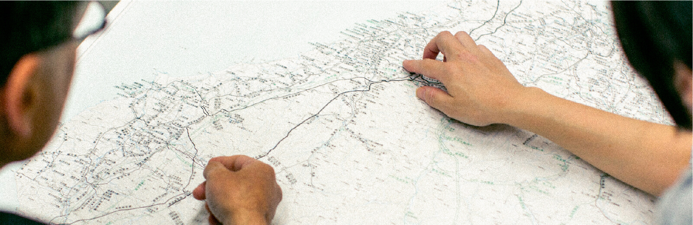
基幹系統計画検討
長期的な視野のもと北陸電力管内において変化するエリア需要動向、将来予測を踏まえ、基幹系統新設や修繕の工事実施計画を検討。より良い設備構築のため、関係各所と連携を図ります。
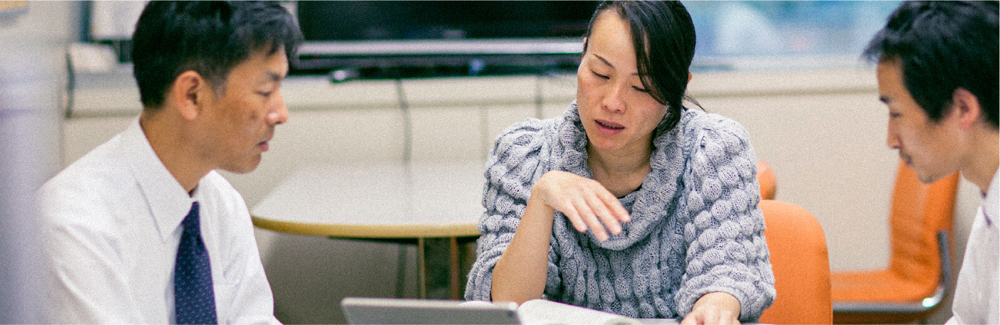
再生可能エネルギー連系について打ち合わせ
再生可能エネルギー発電事業者から電力系統連系申込みを受け、技術的な検討を行います。系統の容量によっては増強が必要となることもあり、供給エリア全体での需給バランス調整を考慮し、安定供給確保に取り組みます。

再生可能エネルギー導入拡大に関する制度対応
近年、再生可能エネルギー連系量拡大の議論が進んでおり、制度変更を含めた検討が加速しています。電力系統有効利用へ、公平・中立を意識した対応が必要なため、その方針をまとめています。
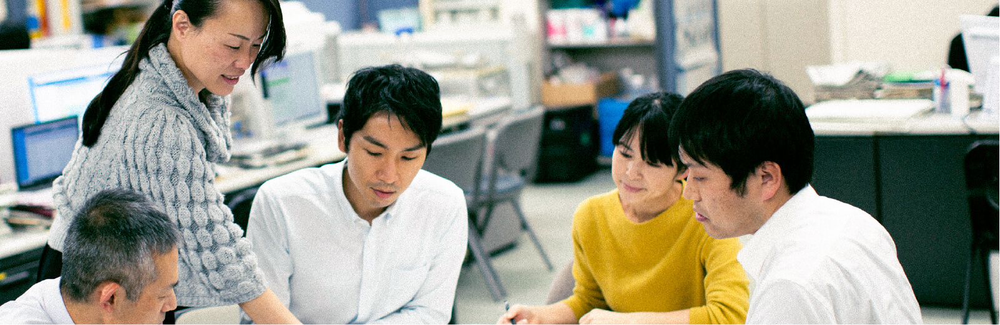
系統計画連絡会
本社・支社の系統計画に携わるメンバーと定期的に勉強会を開催。電力システム改革における長期的な考え方の伝達、基幹系統設備形成などの情報共有を実施し、理解促進を図っています。
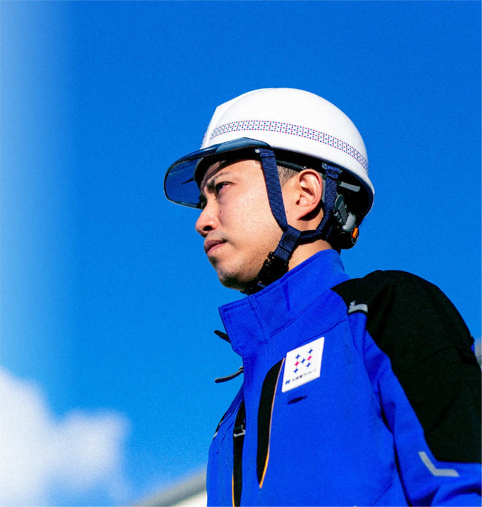
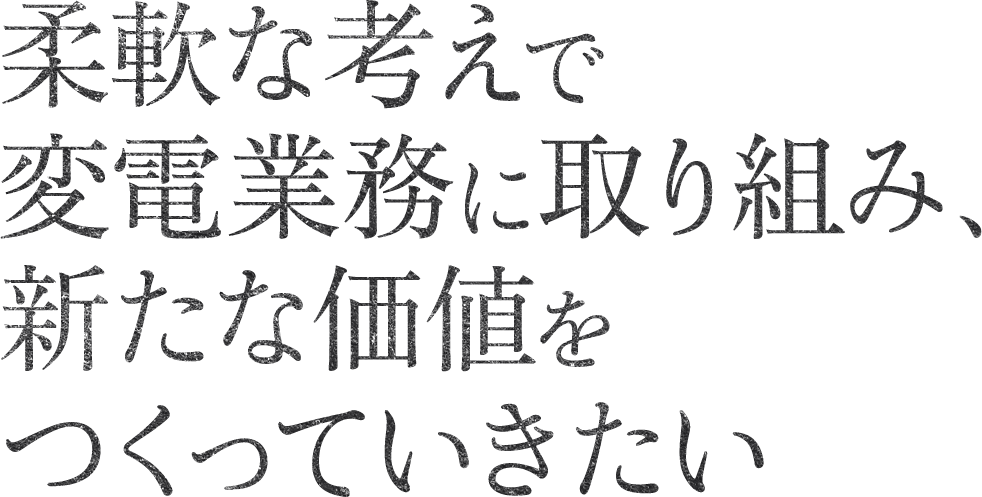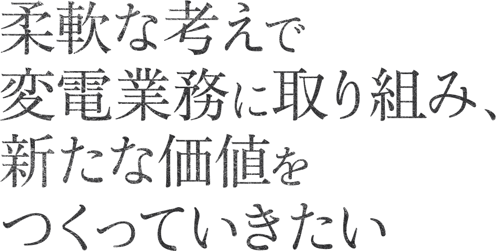
石川支社 金沢電力部 変電工事課旭 泰志
入社 / 2015年
工学専攻科 電気電子専攻修了
現在に至るまでの経歴
2015年7月 小松支社 電力部 発変電課
2017年7月 高岡支社 電力部 変電保守課
2018年7月 富山送配電支社 高岡電力部 変電保守課
2019年7月 石川送配電支社 金沢電力部 変電工事課
2020年4月 石川支社 金沢電力部 変電工事課
経歴は取材時点のものです
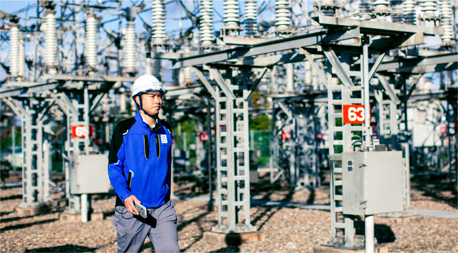
 入社動機は？
入社動機は？
就職活動では地元企業を志望しており、その中で最も社会的な影響力が大きい企業だと感じたのが北陸電力でした。どんなことがあっても電気を止めずに届けていくことは、言葉にするのは簡単でも、いざ実現しようとすると、多くの人が日夜汗を流してこそ実現できるものです。そのような組織の一員として責任ある立場で挑んでいくことで、自分自身も大きく成長できると考え、入社を決めました。
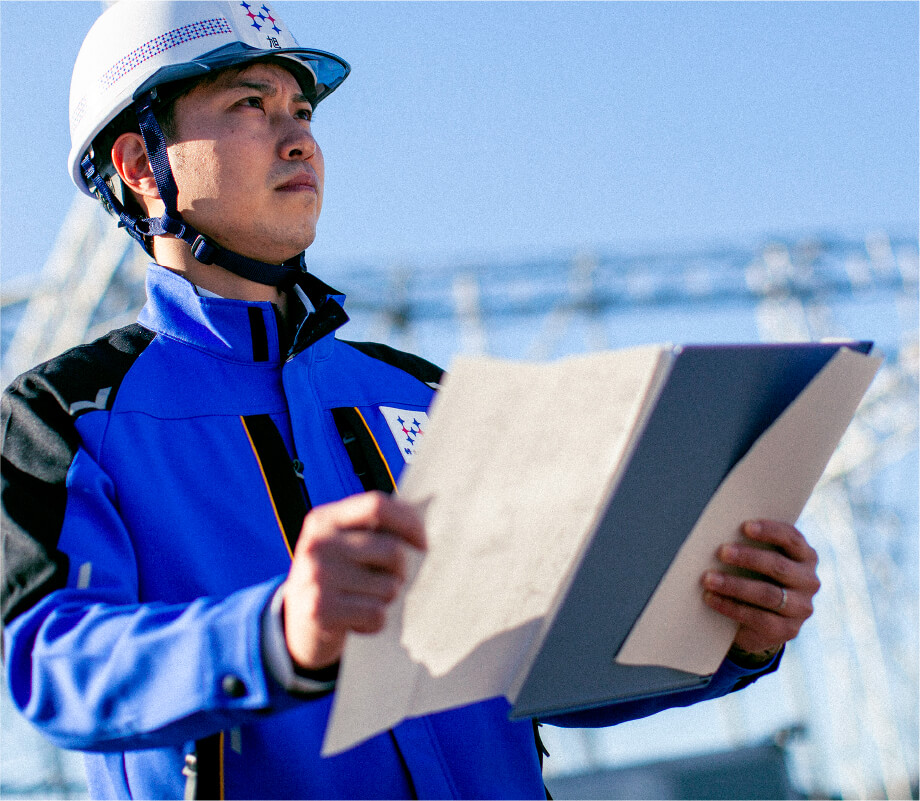
 現在の仕事、その魅力は？
現在の仕事、その魅力は？
電気を送り届けていくのに必要不可欠なのが、電力流通の拠点とも言われる変電所です。発電所でつくられた電気は送電ロスを減らすために超高圧に昇圧され、その後、需要家それぞれのニーズに合わせ電圧を下げ、各企業や家庭に届けられていきます。電気を輸送していく作業の中核に変電作業があり、その拠点となっている変電所において、私は変圧器など変電設備工事の計画、設計、監理を担っています。工事完了までのプロセスを最適に実施するだけでなく、長きにわたって常時稼働していく設備のため、保守性を考慮し、業務に取り組んでいます。自らが設計したものが形ある設備へ変わり、安定供給を支えていく、それを実感できるやりがいがあります。
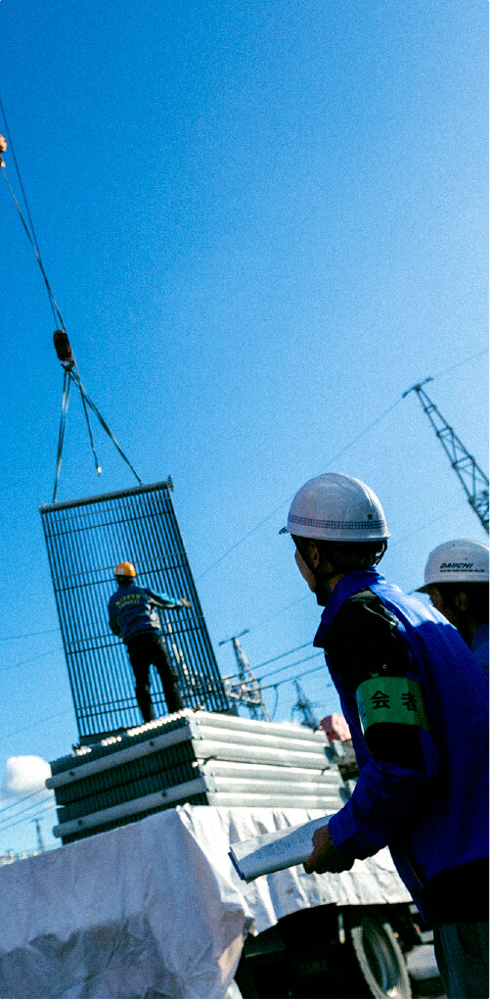
 これからの目標は？
これからの目標は？
電力システム改革に伴い、事業環境の変化を迎える現在でも、私たちの使命は今までと変わらず、良質な電気を安定的に届け続けていくことです。しかし、それは現状維持を意味するものではありません。さらなる信頼を獲得していくために、費用対効果を考慮したうえで必要な既設設備を見直し、より進化した設備へ改善を続けていきたいと考えています。北陸電力には若手であっても課題に対して自由な意見を持ち、上司や先輩社員とともに検討していける環境があります。その中で、柔軟な発想を持った若手技術者として積極的に自分の考えを伝え、私たちが提供する価値向上に貢献したいと考えています。
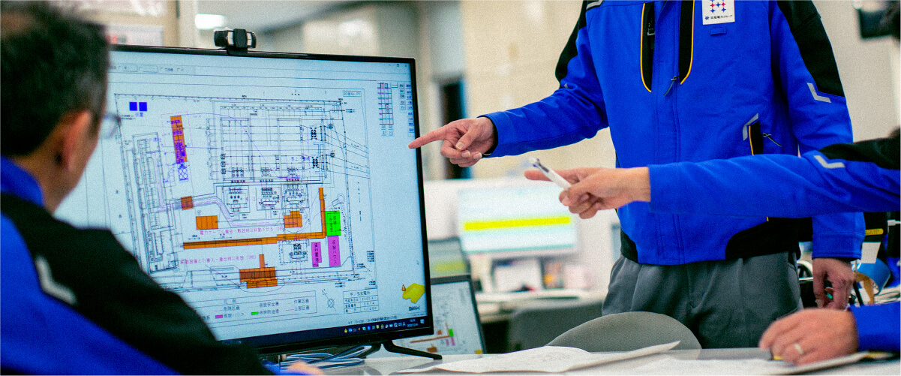
 学生へメッセージを
学生へメッセージを
電力業界はみなさんが思う以上にこれから変わっていく領域だと思います。会社のあり方や働き方にも変革が求められる時代なので、保守的な考え方や前例に縛られず、みなさんの創造力を多分に活かして欲しいと思います。ぜひ一緒にチャレンジしていきましょう。

- 8:40
-
出社、資料作成
出社後、関係各所との連絡事項を確認し、対応。担当している変電設備工事に関する資料作成を行います。円滑な工事を行えるよう検討を重ねます。
- 11:00
-
工事の打ち合わせ
社内・工事業者との打ち合わせを実施。手戻りがないように事前の段取りをしっかり行い、課題や保留事項をクリアにしていきます。
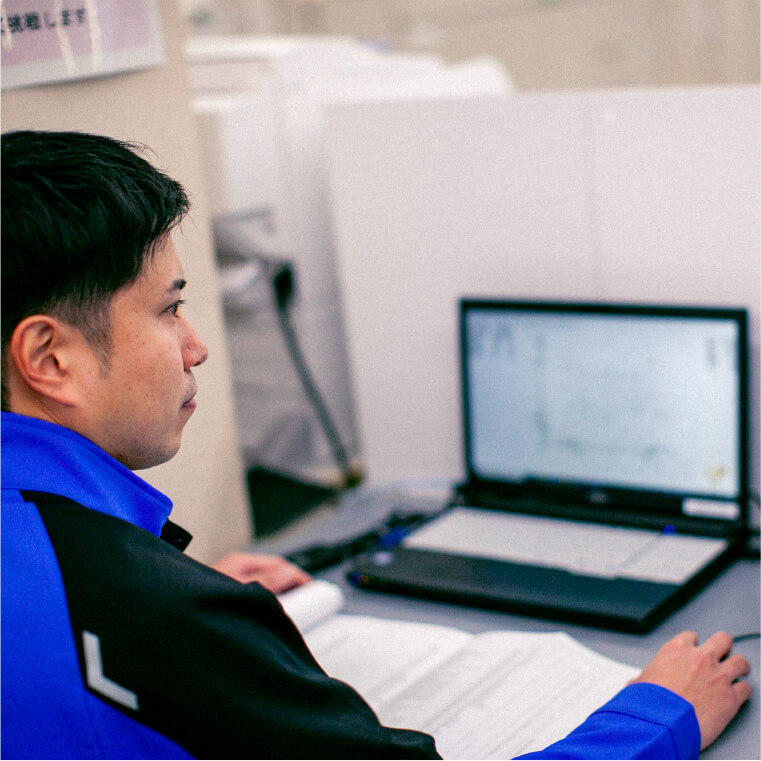 - 13:00
-
工事内容の検討
設備の改良・除去の工事内容を検討。運転・保守のしやすい設備となるよう計画するとともに、新技術の活用なども考えていきます。
- 14:00
-
現場立ち会い
変電設備工事の現場を訪れ、仕上がりを確認。現場担当者とのコミュニケーションを深め、工事中のトラブルを未然に防ぐよう意識しています。
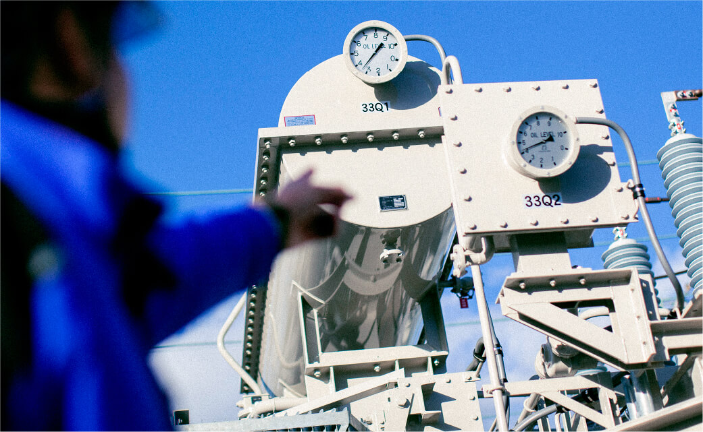 - 17:20
-
明日のスケジュールを確認し、退社
現地にて運転中の機器を点検。長年使う設備のため経年劣化等の具合を確認することも重要な仕事の一つです。異常ないことを確認し、1日の業務を終えます。
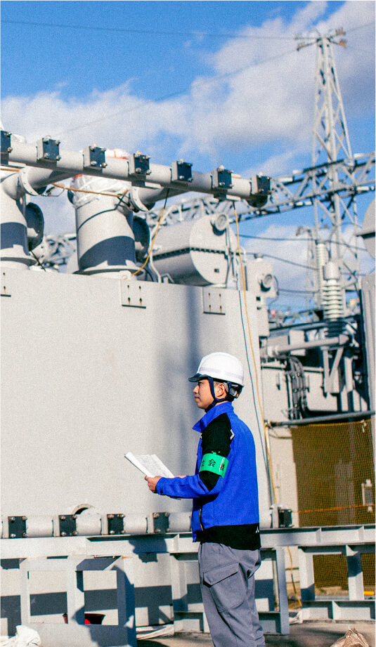
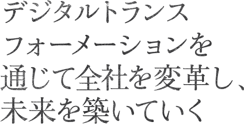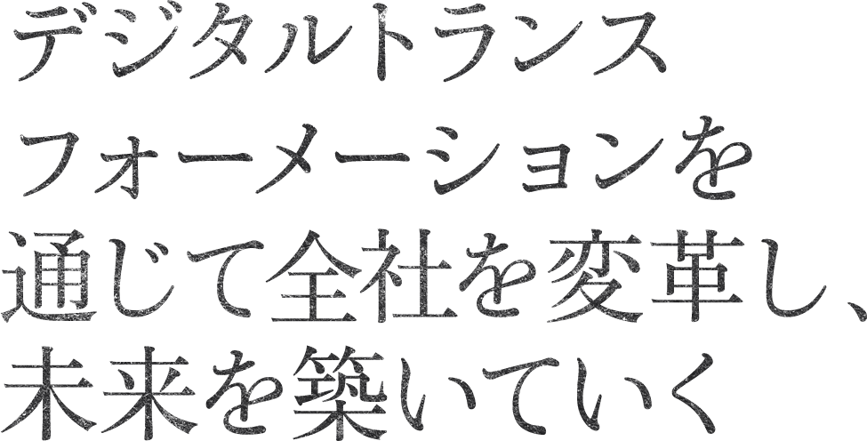
カイゼン・改革・DX推進室川原 尚人
入社 / 2017年
情報システム学研究科修了
現在に至るまでの経歴
2017年7月 福井電力部 電子通信課
2020年9月 電力流通部 電子通信チーム 兼 業務改革・DX推進チーム
2022年4月 カイゼン・改革・DX推進室
経歴は取材時点のものです
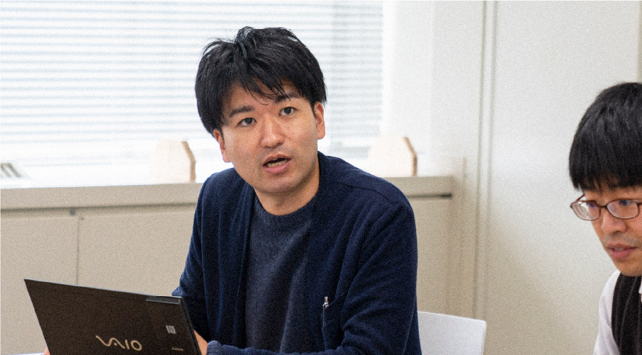
入社動機は？
学生時代は、高速な光通信とFPGAからなる百台規模のコンピュータを接続した計算機クラスタを運用・活用し、データセンタのネットワークやクラウド技術の研究をしていました。そのような知見を土台に、エンジニアとして大規模なインフラを担いたいと考え就職活動を展開。北陸電力のインターンシップに参加し、数百万のお客さまに電気を届けている巨大な電力システムの規模感に率直に感動して志望。北陸の生活に欠かせないインフラ事業を担っていきたいと思い、入社しました。
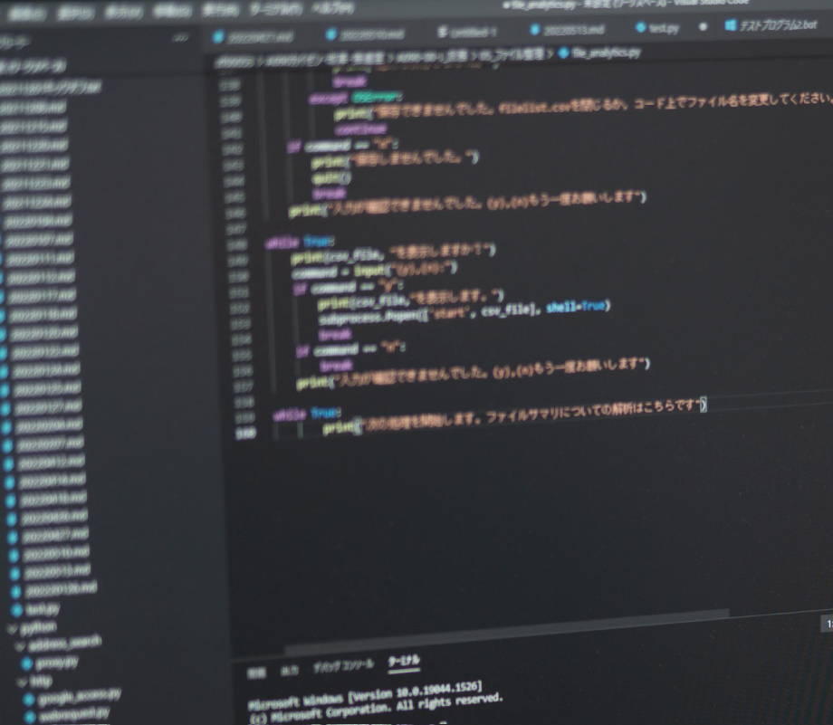
現在の仕事、その魅力は？
北陸電力や私が所属する北陸電力送配電の業務全般を下支えし、電力の供給にも欠かせない情報通信ネットワーク基盤。この情報通信技術を武器にDXを担う私が所属するのが、カイゼン・改革・DX推進室です。送配電事業を取り巻く環境変化に対して、既存の業務の抜本的な改革、そして、これからの価値創造を見据えてDXに取り組んでいます。その中で私は、エンジニアとして戦略立案をはじめ、各現場におけるDX施策の具体的な実行を担当。そこで大切にしているのが、ゼロベースで考え、業務のあり方を問い直していくこと。前例にとどまらずなにが正しく、なにが最適なのか、現在、そして未来の技術変化も踏まえながら検討しています。全社の変革を通して、これからも地域のお客さまを支える北陸電力をつくりあげていきたいと思います。
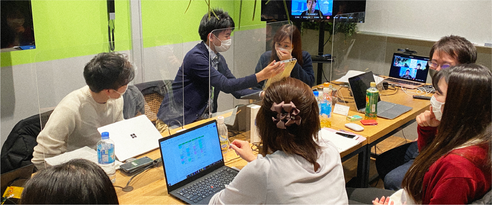
これからの目標は？
情報通信の分野はどの業務にも広範囲に関わってくるからこそ、各部門のスペシャリストと協働しながら自らの知見を広げられます。さらには、北陸電力は若手にも多くのチャレンジの機会があり、社外での多様な研修機会も豊富です。ここでなら自らの力を磨き、最先端の技術力を持ったプロを目指せる。そうして社内からあるいは社外の人からも「この技術ならこの人に聞いてみよう」「一緒に高い技術力を掛け合わせて、未来をつくっていきたい」と思ってもらえる人になりたいです。そして、その技術力をもって国内でトップランナーとなる企業になれるよう懸命に取り組んでいきたいと思います。
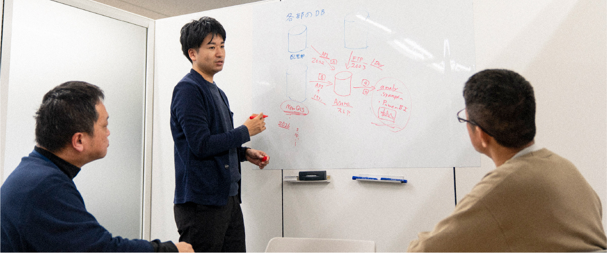
学生へメッセージを
電力業界は今様々な変革が求められています。これからも価値あるサービスを提供しつつ、未来に欠かせないインフラがどうあるべきかを考えていくことが私は楽しみで仕方ありません。ぜひ、一緒に新しい未来を築いていきましょう、
- 8:30
-
出社、ミーティング
出社後は当日の業務内容を確認します。部署内の作業分担を明確にし、業務に取り掛かります。
- 11:00
-
業務改革に向けた打ち合わせ
電力流通部や情報システム部など複数の主管部とともにDX施策の中の、OSS（オープンソースソフトウェア）活用に関する打ち合わせを実施。業務改革に向けたシステム検討を行います。
- 13:00
-
部内での戦略検討
カイゼン・改革・DX推進室のメンバーと、全社方針・戦略について検討します。理想となる状態を考え、そこに実効性を付与していけるよう進めています。
- 16:00
-
イノベーションタイム
改革のためのアイデア創出のため、イノベーションタイムを設けています。業務の間に時間をつくり、技術動向調査やプログラミング、他社の方との意見交換を行い、アウトプットにつなげます。
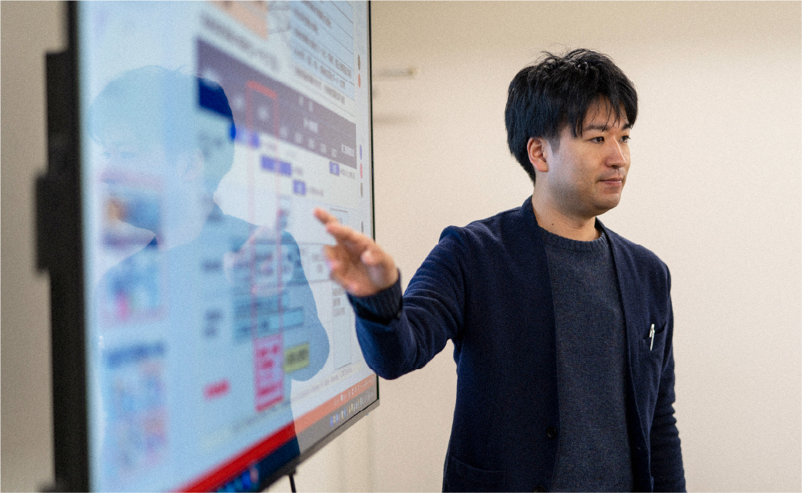 - 17:20
-
振り返りミーティングをし、退社
1日の振り返りを実施。上司と一緒に業務の課題点や解決策を検討し、業務のカイゼンを実施します。次の日のタスクを整理し、退社します。
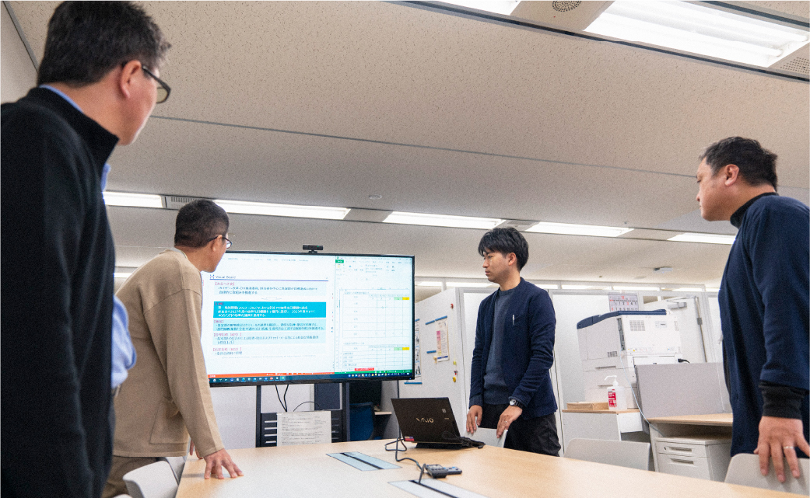